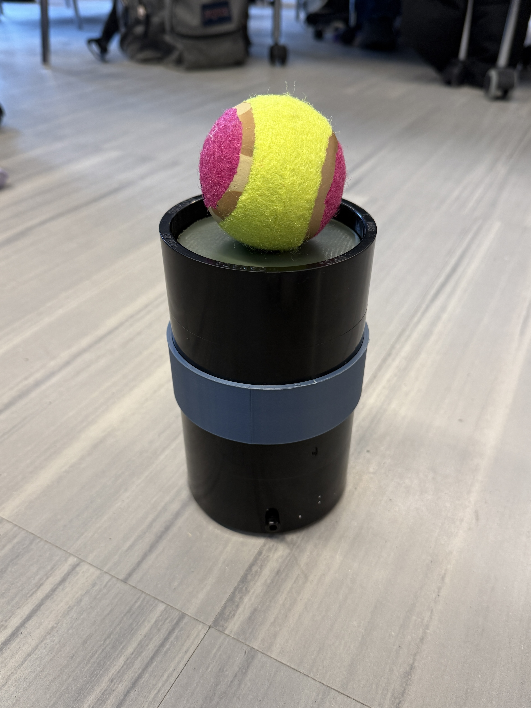
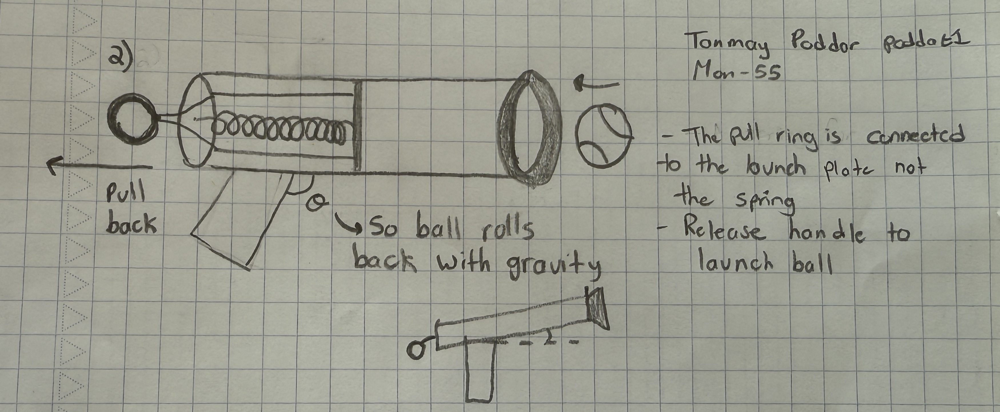
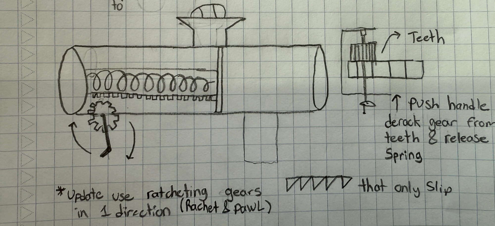
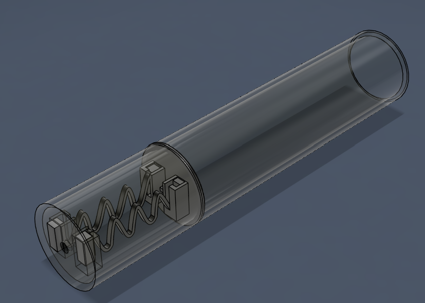
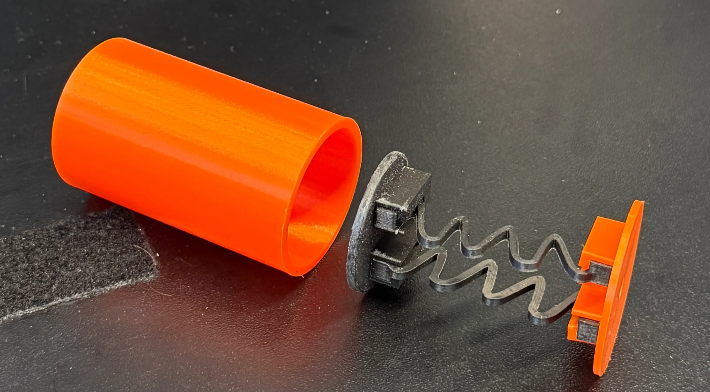
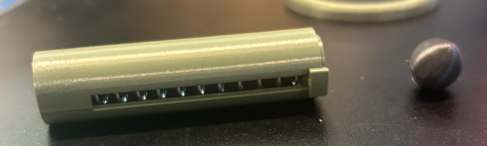
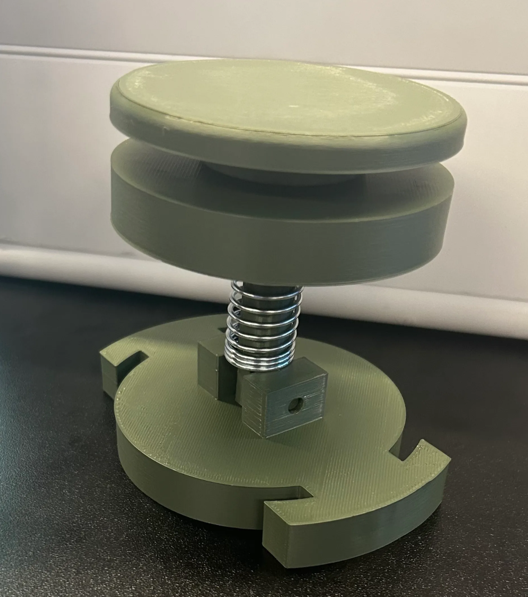

The goal of Project 3 was to design a real-world solution for our client Mark — a retired individual living with juvenile arthritis. The condition significantly limits his grip strength, fine motor control, and upper body endurance.
One area directly affected is his ability to play with his dog, Rosie. Mark struggles to throw a ball far enough to engage her in a meaningful game of fetch. Our solution: a mechanical ball launcher that restores that connection.
The design prioritized Mark's limitations at every step — from mechanism selection to handle ergonomics — while targeting commercial viability.
Light & accessible · Under $50 · Durable · Commercially generalizable · Safe for user & dog

I served as the Subject Matter Expert for this project — maintaining an accurate database of sources and references, and ensuring the project report was completed on time with full team participation.
Beyond my defined role, I contributed across the full design and build pipeline: creating initial concept sketches, refining them into CAD models, fabricating the handle and barrel, and leading the final testing phase with another team member.
As SME, my focus was keeping the team grounded in evidence. Every design decision was cross-referenced against our objectives and constraints — especially accessibility for Mark.
We began by brainstorming mechanisms capable of launching a ball roughly 7.5 m. My first personal concept was a spring-based design where the user pulled back a string handle — minimal moving parts, mountable in a wheelchair cup holder.
My second concept introduced a rack-and-pinion system with a hand crank to wind a spring, and ratcheting gears to hold tension without requiring constant force from the user. The ratchet-and-pawl mechanism was key — Mark wouldn't need to strain to maintain compression.
As a team we converged on a pull-back spring mechanism, which I developed into a CAD model featuring 3D-printed springs slotted into attachment points on both ends. A half-scale model was printed to rapidly validate the mechanism before committing to full-scale fabrication.



After fabricating the half-scale prototype, one of the 3D-printed springs snapped under repeated load. We pivoted to a metal spring, which required rethinking the entire launch method.
3D-printed springs are not ideal for high-stress applications — best reserved for alignment and light-duty uses.
The next iteration used a metal spring with an end plate the user compressed directly. Testing exceeded our target launch distance, but the mechanism jammed repeatedly. We then added a central solid shaft connecting the launch plate through a fixed barrel plate — this resolved the jamming.
The full-scale model revealed a critical insight hidden by small-scale prototyping: applying force off-center (as Mark would from a wheelchair) caused lateral loads on the barrel walls, jamming the launcher. We redesigned for a centrally-pulled handle, reducing off-axis forces and dramatically improving energy efficiency.



The final design uses PVC piping for the barrel and a string handle the user pulls back and releases to launch the ball. The solution proved extremely durable — surviving a drop from the second floor.
Mass and cost came in well below targets, meeting two of our primary objectives with margin to spare.
The spring swap is a simple modification. Given one more iteration, launch distance would have comfortably cleared the target.
The final demonstration video (Figure 8) shows the launcher in operation — loaded and fired by a single user with minimal wrist force, validating the core accessibility objective.
A core challenge was limited manufacturing time against a design that specified a large prototype requiring long print durations. Our solution: prototype at 1:2 scale. During Week 9 studio, I printed a rough concept, found the spring was mounted at an angle, corrected it, and printed a new model — all in the same session.
We used weighted decision matrices at every crossroads — choosing the ball launcher over a pooper scooper specifically because it offered more universal application, better serving both Mark and Rosie.
Failure is an essential part of the design process. Small prototypes allow faster iteration — but they can be misleading, performing much better than the eventual full-scale model.
I will integrate rapid prototyping as my default first step: define the objective, build, evaluate, then document what the prototype proved and what it didn't before moving on.
Iterate quickly and design your prototypes to be simple to fabricate.